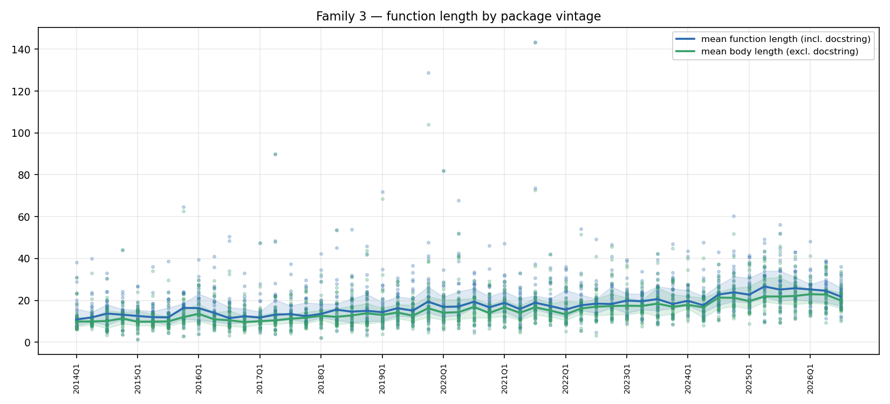
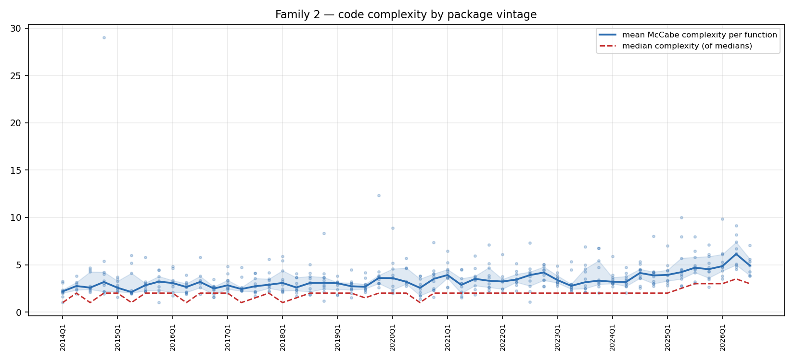
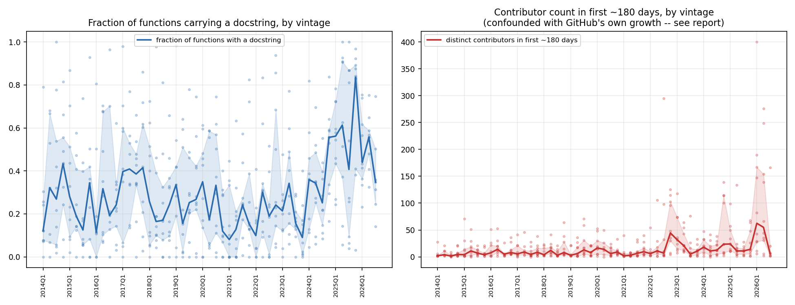
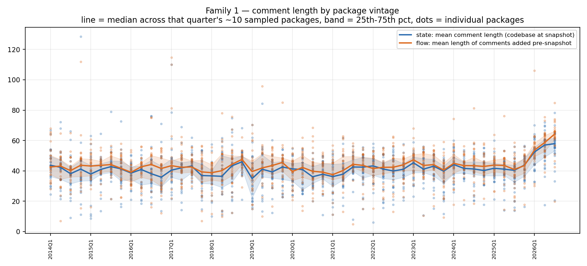
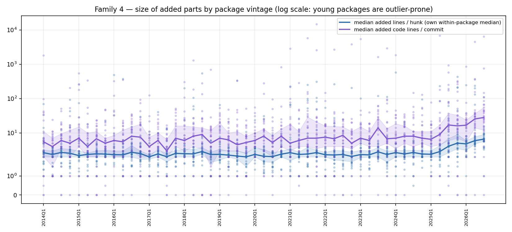
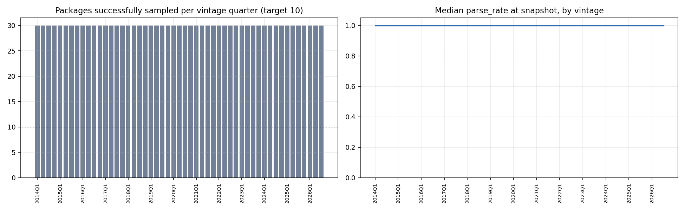

The main study tracks the same 10 mature projects across 12 calendar years. This one asks a different question: pick ~10 new Python packages born in each quarter since 2014, measure each one's structure at the same point in its own lifecycle (~180 days after its first commit), and see whether the starting shape of a newly-created package has changed across 51 birth-cohorts. Methodology, the discovery/validation pipeline, and every caveat are in README.md; this document is the findings.
Sample: 490 packages across 51 quarters (2014Q1–2026Q3), 9.6/quarter on
average, from 978 GitHub candidates scanned (358 rejected for not actually
being a package — no setup.py/pyproject.toml/setup.cfg — and 78 more
for having a birth-quarter that didn't match their real git history; see
README for both).
This is a fundamentally noisier, more confounded dataset than the main study, and the two shouldn't be read with equal confidence: 7–10 packages per point instead of a fixed panel of 10 tracked for 12 years each, selected by a popularity signal (GitHub stars) whose baseline shifted enormously as GitHub itself grew across the same window. Every finding below is stated with that caveat attached, not as a footnote at the end.
Comparing the median of the first 8 cohort-quarters (2014Q1–2015Q4) to the median of the last 8 (2024Q4–2026Q2):
| metric | 2014–2015 cohorts | 2024–2026 cohorts | change |
|---|---|---|---|
| mean function length (lines) | 11.1 | 26.4 | +137% |
| mean function body length (excl. docstring) | 10.0 | 23.6 | +136% |
| mean McCabe complexity | 2.67 | 4.61 | +73% |
| median McCabe complexity | 2.0 | 3.0 | +50% |
| fraction of functions with a docstring | 27% | 56% | +103% |
| mean comment length (chars) | 41.5 | 42.8 | +3% |


The magnitude here dwarfs the equivalent numbers from the calendar-time study, where the same 10 mature repos, tracked over the same 12 years, showed function length +25%, body length +17%, complexity +4.7%. Put the two side by side and a pattern emerges: existing, mature projects have drifted only modestly toward longer/more-complex functions, but the population of newly-started packages has shifted much more sharply. Whatever is driving code to get bigger and more elaborate over the last decade shows up far more in what a package looks like when it's founded than in how an established codebase evolves.

The fraction of functions carrying a docstring bounces noisily between roughly 0.10 and 0.40 for every cohort from 2014Q1 through 2024Q3 — no trend, just quarter-to-quarter sampling noise from a 10-package cohort. Then: 2024Q4 = 0.56, 2025Q1 = 0.56, 2025Q2 = 0.61, 2025Q4 = 0.84 (the single highest point in the whole series), before settling back to 0.35–0.56 in the first three quarters of 2026. That's a distinct step, not a continuation of the prior noise band, and it lands squarely in the window where AI coding assistants (GitHub Copilot, ChatGPT-based tools) went from novelty to mainstream. This is consistent with — but does not prove — AI-assisted authorship of new packages: these tools are well known to default to generating docstrings liberally. Confirming that would need the function-level AI-detector elsewhere in this project, not a corpus-wide aggregate like this one. Two things temper the enthusiasm for that reading: this is exactly the highest-star, most recent, most confound-prone slice of the sample (see below), and the 2026 figures already show it pulling back rather than continuing to climb.

Both state comment length (42.8 vs 41.5) and flow-added comment length
(+4.5%) are essentially flat across the entire 12-year vintage span — the
same finding as Family 1 in the calendar-time study, now confirmed on an
entirely different, non-overlapping sample of packages. Whatever people
write in a # comment has stayed about the same length since 2014,
regardless of whether you look at a fixed set of mature projects over
time or a fresh sample of newly-founded ones by birth year. That
consistency across two independently-built datasets is itself the
strongest single piece of evidence in this whole exercise.

Log-scaled because individual packages are wildly outlier-prone here — a 180-day-old package can easily have had only a dozen commits, so one bulk scaffold/vendoring commit dominates its own median. Reading the median line (not the scattered dots): added-lines-per-hunk sits in a tight 2.5–4 band from 2014 through roughly 2023, then climbs to 5–7 across 2024–2026. Added-lines-per-commit is noisier throughout (typically 4–10, occasional spikes) with a similar late-window rise. Unlike the calendar-time study — where hunk size for mature repos was essentially perfectly flat over 12 years — new packages' initial commits do appear to be getting chunkier recently. Given the small-N noise here, treat this as directional, not precise.
Contributor count and commit count in the first 180 days are the weakest signals in this study and are presented for completeness, not as a finding. Median contributors-in-first-180-days went from 4 (2014–2015 cohorts) to 18.75 (2024–2026 cohorts), a +369% change — but this sample selects the most-starred packages born each quarter, and GitHub's own user base grew roughly 20-fold across this window. A "top-10-by-stars" package born in 2025 is being drawn from an audience of ~100M+ developers; one born in 2014 was drawn from ~4M. Faster star accumulation mechanically implies faster visibility, which mechanically implies more contributors showing up sooner — independent of anything about how the code itself is written. Several 2025–2026 candidates in the raw discovery data show star counts hard to justify for their age at all (see README), consistent with the well-documented recent wave of star-inflation on speculative AI-tooling repos. The code-shape metrics above (function length, complexity, docstring rate) are one step removed from this confound — they're properties of the code, not of its audience — but they aren't fully insulated from it either: a more-visible package attracts more total engineering effort per unit time, which could independently push functions to grow faster regardless of how people are writing them. Nothing in this dataset can fully separate "packages are written differently now" from "popular new packages get more attention faster now, and more attention means more code, faster." Both are probably true to some degree; this study cannot apportion the split.

9 of 51 quarters landed short of the 10-package target (7–9 found instead)
after exhausting all 25 discovered candidates — mostly quarters with an
unusually high share of non-package results (awesome-lists, tutorial
repos) among the top-25 by stars. state_parse_rate starts a little
below 1.0 in 2014–2015 (median ~0.83–0.95 in the earliest cohorts, versus
1.00 from 2017 onward) — the same Python-2-tail effect as the
calendar-time study, just measured on freshly-founded-in-2014 packages
rather than on old files still living inside a 2026 mature codebase.
output/vintage/candidates.jsonoutput/vintage/packages.csvoutput/vintage/progress.jsonoutput/vintage/analysis/vintage_quarterly.csvoutput/vintage/analysis/vintage_trend_summary.csvpython3 src/vintage_discover.py && python3 src/vintage_extract.py
&& python3 src/vintage_analysis.py && python3 src/vintage_charts.py
(each stage is resumable; re-running a finished stage is a no-op)